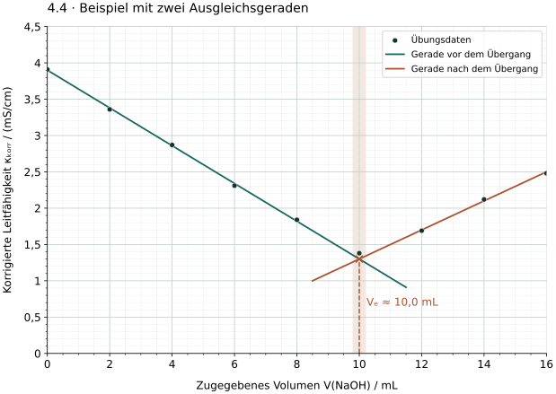
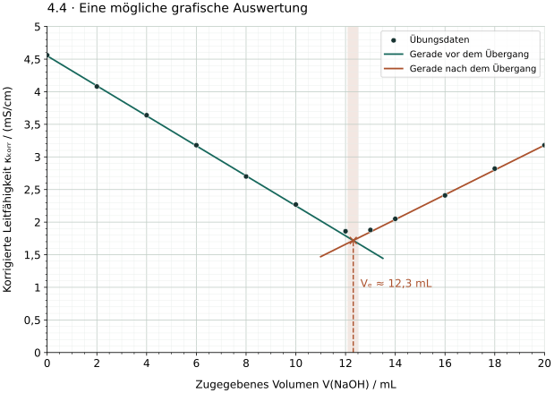

Der Schnittpunkt liefert das gesuchte Volumen
Bei einer Kurve mit zwei näherungsweise linearen Ästen werden diese getrennt durch Ausgleichsgeraden beschrieben. Der Schnittpunkt schätzt den durch den Steigungswechsel angezeigten Endpunkt. Wenn dieser die stöchiometrische Umsetzung zuverlässig wiedergibt, verwenden wir seine Volumenkoordinate als Äquivalenzvolumen VE.
- Wähle auf jeder Seite mehrere Punkte aus einem annähernd linearen Bereich. Lass den gekrümmten Übergang bei der Geradenwahl aus.
- Zeichne für jeden Bereich eine Gerade, die den gemeinsamen Trend wiedergibt. Normale Streuung darf beidseits der Geraden liegen.
- Verlängere die Geraden bis zu ihrem Schnittpunkt und lies dessen Volumenkoordinate ab.
- Prüfe, wie stark sich die Ablesung bei noch plausiblen Geradenlagen ändert. Gib nur die dadurch gerechtfertigte Genauigkeit an.
Die hier verwendeten Übungsdaten sind bereits volumenkorrigiert. Zur Auswahl geeigneter Bereiche hilft Punkt 4.3. Ein einzelner kleinster Messwert ersetzt das Schnittpunktverfahren nicht.
Ein ausgearbeitetes Beispiel

Die eingezeichneten Geraden schneiden sich bei ungefähr VE = 10,0 mL. Berücksichtigt man die Punktstreuung und geringfügig andere plausible Geradenlagen, ist hier etwa 9,8–10,2 mL ein sinnvoller grafischer Ablesebereich. Ein Ergebnis wie 10,000 mL würde eine nicht vorhandene Genauigkeit vortäuschen.
Dieser Bereich ist eine begründete Einschätzung der grafischen Auswertung, kein statistisch berechnetes Konfidenzintervall und keine vollständige Messunsicherheit. Auch leicht andere begründete grafische Bereiche sind möglich.
Zusatzkontrolle über die Geradengleichungen
Für die eingezeichneten Geraden sei x = V / mL und y = κkorr / (mS/cm). Es gilt näherungsweise y₁ = 3,90 − 0,260 x und y₂ = −0,70 + 0,200 x. Gleichsetzen ergibt 4,60 = 0,460 x, also x = 10,0 und y = 1,30.
Die Rechnung überprüft die Zeichnung. Sie erzeugt keine zusätzliche Genauigkeit gegenüber den zugrunde liegenden Daten.
Eine neue Kurve selbst auswerten
Untersuche nun einen neuen didaktischen Datensatz einer Säure-Base-Titration bei konstanter Temperatur. Arbeite auf dem Ausdruck oder zeichne die Werte auf Millimeterpapier.

Arbeitsblatt ohne Lösung öffnen · Diagramm als SVG herunterladen
Wertetabelle für eine eigene Zeichnung
| V(NaOH) / mL | κkorr / (mS/cm) |
|---|---|
| 0,0 | 4,56 |
| 2,0 | 4,08 |
| 4,0 | 3,64 |
| 6,0 | 3,18 |
| 8,0 | 2,70 |
| 10,0 | 2,27 |
| 12,0 | 1,86 |
| 13,0 | 1,88 |
| 14,0 | 2,05 |
| 16,0 | 2,41 |
| 18,0 | 2,82 |
| 20,0 | 3,18 |
- Wähle die beiden Geradenbereiche und begründe deine Auswahl.
- Zeichne zwei Ausgleichsgeraden und bestimme VE aus dem Schnittpunkt.
- Gib einen plausiblen grafischen Ablesebereich an. Begründe die Anzahl der Nachkommastellen.
- Erkläre, warum „Der kleinste Tabellenwert liegt bei 12,0 mL, also ist VE exakt 12,0 mL“ keine ausreichende Auswertung ist.
Hilfe 1: Geraden einzeichnen
Betrachte links zunächst die Punkte bis 10 mL und rechts die Punkte ab 14 mL. Die Punkte bei 12 und 13 mL liegen im Übergang. Die Gerade soll jeweils den Trend aller ausgewählten Punkte treffen, nicht bloß zwei zufällig gewählte Nachbarn verbinden.
Hilfe 2: Schnittpunkt und Ablesebereich
Lies beim Schnittpunkt das Volumen auf der waagerechten Achse ab, nicht den Leitfähigkeitswert. Prüfe zusätzlich eine etwas steilere und eine etwas flachere noch plausible Geradenlage. Ein Ablesebereich begründet, warum mehrere Nachkommastellen unpassend wären.
Musterlösung: Auswertung und Ergebnis

Bereiche: 0–10 mL und 14–20 mL sind annähernd linear und enthalten mehrere Punkte über eine ausreichende Volumenspanne. Die Punkte bei 12 und 13 mL werden bei der Geradenwahl ausgelassen, bleiben aber in der Grafik sichtbar.
Ergebnis: VE ≈ 12,3 mL. Etwa 12,1–12,5 mL ist hier ein plausibler grafischer Ablesebereich; deine Linienlage und Begründung entscheiden mit. Eine Angabe auf Zehntelmilliliter mit „ungefähr“ passt zur Zeichnung. 12,30952 mL wäre Scheingenauigkeit.
Kontrolle der eingezeichneten Geraden: Mit x = V / mL und y = κkorr / (mS/cm) wurden y₁ = 4,55 − 0,230 x und y₂ = −0,62 + 0,190 x verwendet. Ihr Schnitt liegt rechnerisch bei x = 5,17 / 0,420 ≈ 12,31. Die grafische Ergebnisangabe bleibt 12,3 mL.
Kleinster Messwert: Er ist nur der kleinste der vorhandenen Einzelwerte. Die Lage des tatsächlichen Steigungswechsels kann zwischen zwei Volumenwerten liegen. Streuung und Rundung des Übergangs beeinflussen das Minimum zusätzlich.
Zurück zur Checkliste
Kannst du deine Geradenbereiche begründen, den Schnittpunkt richtig auf die Volumenachse übertragen und ein Ergebnis mit angemessener Genauigkeit angeben?
Fachliche Quellen und Modellgrenzen
- IUPAC (2019): Terminology of electrochemical methods of analysis, Abschnitt 6.7.1: konduktometrische Auswertung über den Schnittpunkt linearer Kurvenabschnitte.
Alle Punktreihen, Ausgleichsgeraden und Grafiken sind eigenständig erstellte didaktische Modelle. Die eingezeichneten Geraden wurden zur grafischen Veranschaulichung gewählt; sie sind keine mit unbegründeter Präzision behaupteten Messresultate. Die angegebenen Ablesebereiche sind plausible grafische Einschätzungen, keine statistischen Konfidenzintervalle.